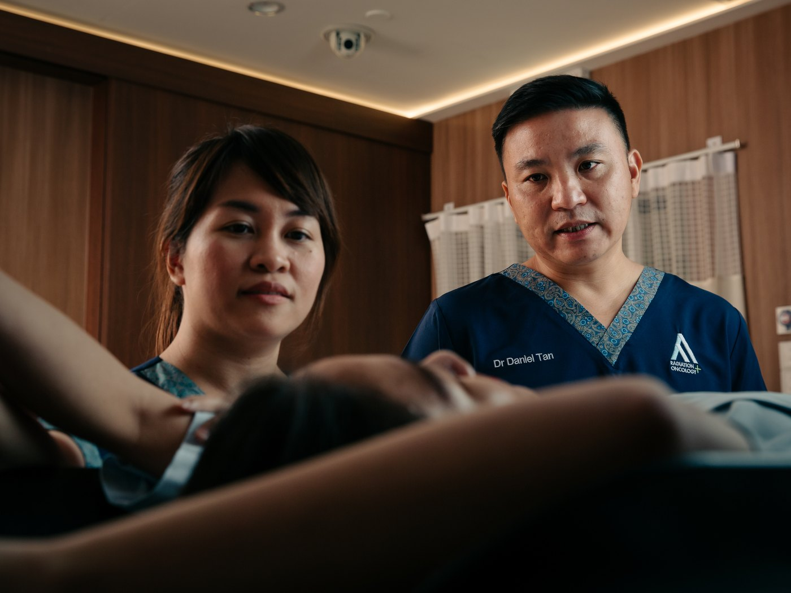

Brain or spine tumours
Newly diagnosed primary tumours, or cancers that have spread (metastasised) to the brain or spine — and you want to understand whether radiosurgery or SBRT is right for you.

Stereotactic Radiosurgery (SRS) and Stereotactic Body Radiotherapy (SBRT) for brain, spine, breast and prostate cancers. Co-founder of AARO. Board Director of the International Stereotactic Radiosurgery Society (ISRS).
These are the situations Dr Tan most commonly sees — but every case is different. If you're unsure whether radiation oncology fits your situation, our care team can help you decide.
Newly diagnosed primary tumours, or cancers that have spread (metastasised) to the brain or spine — and you want to understand whether radiosurgery or SBRT is right for you.
Considering SBRT for early-stage disease, or seeking precision-radiation options where surgery carries elevated risk.
Already under another oncologist's care and want to confirm whether radiation is the right next step — or hear an experienced view on your treatment plan.
You've been told that surgery carries high risk, or you'd prefer to avoid it. Modern radiation can match surgical outcomes for many cancers — without the recovery time.
Your medical team is considering whether to add radiation to your treatment, and they want a radiation oncologist's input on planning, sequencing and dose.
Pain from bone metastases, neurological symptoms from brain or spine lesions, or palliative needs that radiation can address quickly and gently.
Dr Tan trained at the National Cancer Centre Singapore from 2003 to 2015, rising from Resident to Consultant — co-chairing the Neuro-Oncology Service Line and helping to build Southeast Asia's first stereotactic body radiation therapy (SBRT) programmes for prostate, liver and spine cancers.
In 2015, he founded AARO to bring sub-specialised, internationally-trained oncology into Singapore's private sector. He continues to publish at ASTRO, ASCO and ISRS, and consults for cancer centres in China, Russia and Myanmar.
In June 2024, Dr Tan was elected to the Board of Directors of the International Stereotactic Radiosurgery Society — the world's largest professional body for SRS and SBRT.

Patients describe Dr Tan as kind, patient and unhurried — and his consultations reflect that. He takes the time to understand each person's situation: what matters to them, what they're afraid of, and what they need to hear in plain terms.
You won't be rushed through your appointment. You won't be talked at in jargon. And you won't leave with more questions than you came in with — because Dr Tan and the AARO care team work together, so the same person who explained your treatment plan is also the one who walks you through it.
For complex cases, Dr Tan convenes a multidisciplinary review with your surgeon and medical oncologist before recommending a path forward. The decision is collaborative — but it is always yours.
Director and Senior Consultant Radiation Oncologist. Dr Tan leads AARO's advanced-technology approach to cancer treatment and oversees the centre's clinical standards.
Over 20 years of clinical experience, focused on brain and spine tumours (benign and malignant), breast cancer and prostate cancer. Core expertise: stereotactic radiosurgery (SRS) and stereotactic body radiotherapy (SBRT).
Elected to the Board of Directors of the International Stereotactic Radiosurgery Society in June 2024 — the world's largest radiosurgery professional body.
Dual-trained in chemotherapy and radiotherapy. Fluent in 3D-CRT, IMRT, VMAT, SRS, SBRT, brachytherapy and image-guided radiation therapy (IGRT).
NUS graduate (2002). Trained at the National Cancer Centre Singapore from 2003 to 2015 — Resident → Registrar → Consultant — before founding AARO. Co-chair, NCCS Neuro-Oncology Service Line.
Two Health Manpower Development Programme (HMDP) awards — for advanced clinical oncology training in the United Kingdom (2008) and brachytherapy training (2013). Public Service Medal (Pingat Bakti Masyarakat).
Holds an MBA from NUS Business School. Founded AARO in 2015 to bring sub-specialised, internationally-trained oncology into Singapore's private sector — and to anchor it in a purpose-built facility.
Consults for cancer centres in China, Russia and Myanmar. Has worked with University of Pittsburgh Medical Center (UPMC) and MD Anderson Cancer Center to bring international standards into regional radiation oncology programmes.
Publishes and presents at ASTRO, ASCO and ISRS on neuro-oncology and SBRT. Past leadership at NCCS, the Singapore Society of Oncology, and now ISRS.
Dr Tan's full publication list — including peer-reviewed papers, conference presentations at ASTRO, ASCO and ISRS, and invited lectures — is available on request. Get in touch if you'd like a current list for academic, referral or due-diligence purposes.
WhatsApp our patient care team — same-working-day reply. No referral needed.